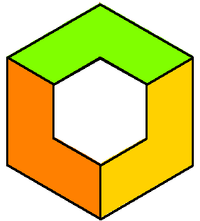
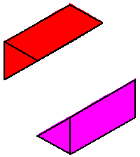
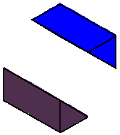
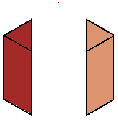
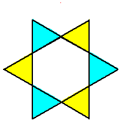
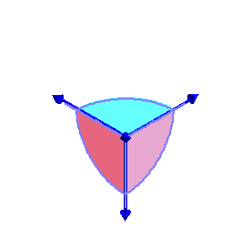

| After a change of coordinates, any general plane in (C*)3 has equation x+y+z+1=0. This coAmoeba also has a completely geometric description as the collection of all triples of angles (θx, θy, θz) for which there exist a quadrilateral with one side horizontal whose other sides make these angles to the horizontal (when oriented cyclically). If we use the cube [-π,π]3 as a fundamental domain for triples of angles, then the closure of this coAmoeba is the cube with an open rhombic dodecahedron removed. This rhombic dodecahedron is the Voronoi cell for the A3 lattice, suitably embedded in R3. |  | ||
| The phase limit set is the limiting values of these angles as one of the coordinates (x,y,z, or 1) tends to zero. (Since it is the relative lengths of the complex numbers that matter, we see that 1 tends to zero when the other three coordinates increase without bound.) From our geometric description of the coAmoeba as angles of quadrilaterals, we see that these will be essentially cylinders over the phase limit sets of lines in 2-space, which is what we see below: | |||
|
 Phase limit set as x→0 |
 Phase limit set as y→0 |
 Phase limit set as z→0 |
 Phase limit set as 1→0 |
|
These four components of the phase limit set correspond to the four rays of
the tropical variety (here a fan) of the plane.
It is interesting to note that the union of (the closures of) these four
components of the phase limit set is the (closure of) the coAmoeba, and a
general point of the coAmoeba lies in exactly two of these phase limit sets. There are higher-codimensional pieces of the phase limit set which correspond to the six two-dimensional cones in the tropical fan. Each of these is a 2-dimensional subtorus, which is one of the six facets of the coAmoeba. Observe that parts of these components are on the boundary of the coAmoeba, and parts lie within the interior of the coAmoeba. |
 |
||